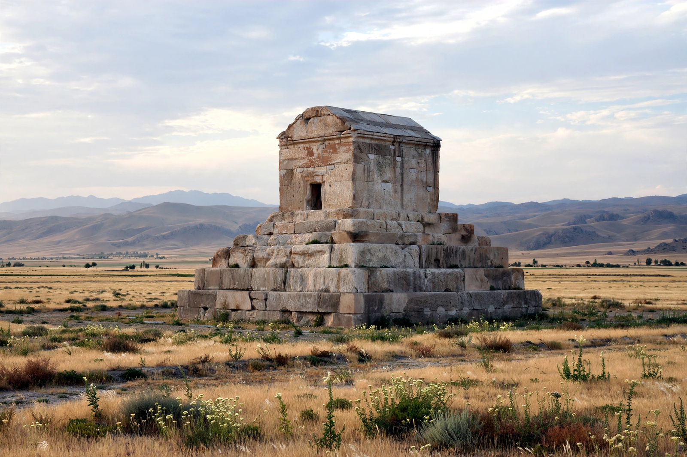

Pasargadae

Location: Fars Province, Iran
Founded: 6th century BCE by Cyrus the Great
Status: first capital of the Achaemenid Empire
UNESCO World Heritage Site (2004)
Pasargadae was the capital of the Achaemenid Empire under Cyrus the Great (559–530 BCE), founded near the site of his victory over the Median king Astyages in 550 BCE. Located in present-day Fars Province, Iran, about 90 km northeast of Shiraz, its ruins — palaces, gardens, and above all the Tomb of Cyrus — survive as a UNESCO World Heritage Site.
Principal monuments
The Tomb of Cyrus is a small limestone chamber raised on six receding steps, resembling a Mesopotamian ziggurat base joined to a gabled house-like tomb; an inscription once read "I am Cyrus, king, an Achaemenian." Alexander the Great visited the tomb after the fall of Persia. Other remains include the audience hall (Palace S) with its relief of a four-winged guardian figure in Elamite dress, the residential Palace P, the Gate House (Palace R), a sacred precinct, the stone platform known as Tall-e Takht ("Solomon's Throne"), and the Zendan-e Soleyman tower, similar to the Ka'ba-ye Zartosht at Naqsh-e Rostam.
Gardens
Pasargadae contained the earliest known example of the Persian chahar bagh — a formal garden divided into four parts by stone water channels — the prototype of a tradition that spread across the Islamic world.
History and excavation
After Cyrus, Darius I moved the capital to Persepolis and Susa, but Pasargadae retained religious significance as the site of royal inaugurations. The site was identified in the 19th century, surveyed by Ernst Herzfeld, and excavated by the British Institute of Persian Studies under David Stronach in the 1960s. A carved winged figure and trilingual inscriptions in Cyrus's name remain key evidence for early Achaemenid art.
See also: Cyrus Cylinder · Cyrus the Great · Persepolis